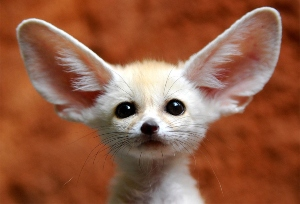
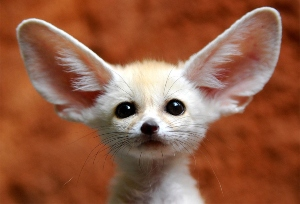

El zorro es un mamífero perteneciente a la familia Canidae. Su tamaño puede variar desde los 30 cm hasta los 90 cm de longitud, y su peso oscila entre 1 y 14 kg, dependiendo de la especie. Los zorros son conocidos por su pelaje espeso y esponjoso, que puede presentar una amplia gama de colores, desde tonos rojizos y grises hasta blanco y negro. Cuando son cachorros, los zorros tienen una apariencia tierna y suelen tener un pelaje más claro que cambia a medida que maduran. Los zorros son animales astutos y poseen sentidos agudos que les ayudan en la caza. Son conocidos por vivir en hábitats diversos, desde bosques y praderas hasta áreas urbanas. Los zorros son criaturas sociales que pueden formar grupos familiares, y algunos tienen comportamientos monógamos. Aunque son generalmente salvajes, hay registros de zorros domesticados como mascotas en ciertas culturas. Los zorros son animales inteligentes y adaptables que han capturado la imaginación de las personas a lo largo de la historia.

 
